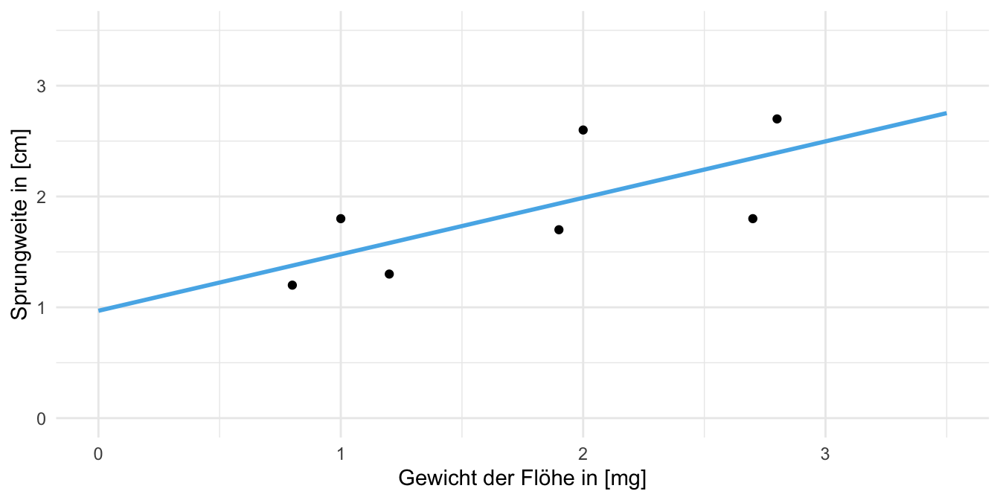

29 Simple lineare Regression
Version vom September 05, 2022 um 16:52:58
in diesem Kapitel wollen wir uns mit den Grundlagen der linearen Regression beschäftigen. Damit meine ich erstmal die Idee eine Gerade durch eine Punktewolke zu zeichnen. Das ist erstmal die simpleste Anwendung. Wir lernen hier einmal die Grundbegriffe und erweitern diese dann auf komplexere Modelle.
Du kanst duch aber davon gedanklich lösen, dass die lineare Regression nur eine Methode ist um eine Gerade durch eine Punktewolke zu legen. Die lineare Regression und damit auch das statistische Modellieren kann viel mehr.
29.1 Genutzte R Pakete für das Kapitel
Wir wollen folgende R Pakete in diesem Kapitel nutzen.
pacman::p_load(tidyverse, magrittr, conflicted, broom,
readxl)
conflict_prefer("select", "dplyr")
conflict_prefer("filter", "dplyr")
conflict_prefer("mutate", "dplyr")Am Ende des Kapitels findest du nochmal den gesamten R Code in einem Rutsch zum selber durchführen oder aber kopieren.
29.2 Daten
Wir wollen uns erstmal mit einem einfachen Datenbeispiel beschäftigen. Wir können die lineare Regression auf sehr großen Datensätzen anwenden, wie auch auf sehr kleinen Datensätzen. Prinzipiell ist das Vorgehen gleich. Wir nutzen jetzt aber erstmal einen kleinen Datensatz mit \(n=7\) Beobachtungen. In der Tabelle 29.1 ist der Datensatz simplel_tbl dargestellt. Wir wollen den Zusammenhang zwischen der Sprungweite in [cm] und dem Gewicht in [mg] für sieben Beobachtungen modellieren.
| jump_length | weight |
|---|---|
| 1.2 | 0.8 |
| 1.8 | 1.0 |
| 1.3 | 1.2 |
| 1.7 | 1.9 |
| 2.6 | 2.0 |
| 1.8 | 2.7 |
| 2.7 | 2.8 |
In Abbildung 29.1 sehen wir die Visualisierung der Daten simple_tbl in einem Scatterplot mit einer geschätzen Gerade.

Wir schauen uns in diesem Kapitel nur eine simple lineare Regression mit einem \(x_1\) an. In unserem Fall ist das \(x_1\) gleich dem weight. Später schauen wir dann multiple lineare Regressionen mit mehreren \(x_1,..., x_p\) an.
Bevor wir mit dem Modellieren anfangen können, müssen wir verstehen, wie ein simples Modell theoretisch aufgebaut ist. Danach können wir uns das lineare Modell in R anschauen.
29.3 Simple lineare Regression theoretisch
Wir haben nun die ersten sieben Beobachtungen in dem Objekt simple_tbl vorliegen. Wie sieht nun theoretisch eine lineare Regression aus? Wir wollen eine Grade durch Punkte legen, wie wie wir es in Abbildung 29.1 sehen. Die blaue Gerade wir durch eine Geradengleichung beschreiben. Du kenst vermutlich noch die Form \(y = mx + b\). In der Statistik beschreiben wir eine solche Gerade aber wie folgt.
\[ y \sim \beta_0 + \beta_1 x_1 + \epsilon \]
mit
- \(\beta_0\) als den y-Achsenabschnitt.
- \(\beta_1\) als der Steigung der Geraden.
- \(\epsilon\) als Residuen oder die Abweichungen von den \(y\)-Werten auf Geraden zu den einzelnen \(y\)-Werten der Beobachtungen.
In Tabelle 29.2 siehst du nochmal in einer Tabelle den Vergleich von der Schreibweise der linearen Regression in der Schule und in der Statistik. Darüber hinaus sind die deutschen Begriffe den englischen Begriffen gegenüber gestellt. Warum schreiben wir die Gleichung in der Form? Damit wir später noch weitere \(\beta_px_p\)-Paare ergänzen könen und so multiple Modelle bauen können.
| \(\boldsymbol{y = mx +b}\) | \(\boldsymbol{y \sim \beta_0 + \beta_1 x_1 + \epsilon}\) | Deutsch | Englisch |
|---|---|---|---|
| \(m\) | \(\beta_1\) | Steigung | Slope |
| \(x\) | \(x_1\) | Einflussvariable | Risk factor |
| \(b\) | \(\beta_0\) | y-Achsenabschnitt | Intercept |
| \(\epsilon\) | Residuen | Residual |
In Abbildung 29.3 sehen wir die Visualisierung der Gleichung in einer Abbildung. Die Gerade läuft durch die Punktewolke und wird durch die statistischen Maßzahlen bzw. Parameter \(\beta_0\), \(\beta_1\) sowie den \(\epsilon\) beschrieben. Wir sehen, dass das \(\beta_0\) den Intercept darstellt und das \(\beta_1\) die Steigung der Geraden. Wenn wir \(x\) um 1 Einheit erhöhen \(x+1\), dann steigt der \(y\) Wert um den Wert von \(\beta_1\). Die einzelnen Abweichungen der beobachteten \(y\)-Wert zu den \(y\)-Werten auf der Gerade (\(\hat{y}\)) werden als Residuen oder auch \(\epsilon\) bezeichnet.

Schauen wir uns einmal den Zusammenhang von \(y\), den beobachteten Werten, und \(\hat{y}\), den geschätzen Werten auf der Gerade in unserem Beispiel an. In Tabelle 29.3 sehen wir die Berechnung der einzelnen Residuen für die Gerade aus der Abbildung 29.1. Wir nehmen jedes beobachtete \(y\) und ziehen den Wert von \(y\) auf der Gerade, bezeichnet als \(\hat{y}\), ab. Diesen Schritt machen wir für jedes Wertepaar \((y_i; \hat{y}_i)\).
| x | y | \(\boldsymbol{\hat{y}}\) | Residuen (\(\boldsymbol{\epsilon}\)) | Wert |
|---|---|---|---|---|
| 0.8 | 1.2 | 1.38 | \(\epsilon_1 = y_1 - \hat{y}_1\) | \(\epsilon_1 = 1.2 - 1.38 = -0.18\) |
| 1.0 | 1.8 | 1.48 | \(\epsilon_2 = y_2 - \hat{y}_2\) | \(\epsilon_2 = 1.8 - 1.48 = +0.32\) |
| 1.2 | 1.3 | 1.58 | \(\epsilon_3 = y_3 - \hat{y}_3\) | \(\epsilon_3 = 1.3 - 1.58 = -0.28\) |
| 1.9 | 1.7 | 1.94 | \(\epsilon_4 = y_4 - \hat{y}_4\) | \(\epsilon_4 = 1.7 - 1.94 = -0.24\) |
| 2.0 | 2.6 | 1.99 | \(\epsilon_5 = y_5 - \hat{y}_5\) | \(\epsilon_5 = 2.6 - 1.99 = +0.61\) |
| 2.7 | 1.8 | 2.34 | \(\epsilon_6 = y_6 - \hat{y}_6\) | \(\epsilon_6 = 1.8 - 2.34 = -0.54\) |
| 2.8 | 2.7 | 2.40 | \(\epsilon_7 = y_7 - \hat{y}_7\) | \(\epsilon_7 = 2.7 - 2.40 = +0.30\) |
sigma bezeichnet.Die Abweichungen \(\epsilon\) oder auch Residuen genannt haben einen Mittelwert von \(\bar{\epsilon} = 0\) und eine Varianz von \(s^2_{\epsilon} = 0.17\). Wir schreiben, dass die Residuen normalverteilt sind mit \(\epsilon \sim \mathcal{N}(0, s^2_{\epsilon})\). Wir zeichnen die Gerade also so durch die Punktewolke, dass die Abstände zu den Punkten, die Residuen, im Mittel null sind. Die Optimierung erreichen wir in dem wir die Varianz der Residuuen minimieren. Folglich modellieren wir die Varianz.
29.4 Simples lineare Regression in R
Im Allgemeinen können wir ein Modell in R wie folgt schreiben. Wir brauchen ein y auf der linken Seite und in der simplen linearen Regressione ein \(x\) auf der rechten Seite der Gleichung. Wir brauchen also zwei Variablen \(y\) und \(x\), die natürlich nicht im Datensatz in R so heißen müssen.

Konkret würden wir in unserem Beispiel das Modell wie folgt benennen. Das \(y\) wird zu jump_length und das \(x\) wird zu weight. Wir haben dann das Modell in der simplesten Form definiert.

Nachdem wir das Modell definiert haben, setzen wir dieses Modell jump_length ~ weight in die Funktion lm() ein um das lineare Modell zu rechnen. Wie immer müssen wir auch festlegen aus welcher Datei die Spalten genommen werden sollen. Das machen wir mit der Option data = simple_tbl. Wir speichern dann die Ausgabe der Funktion lm() in dem Objekt fit_1 damit wir die Ausgabe noch in andere Funktionen pipen können.
fit_1 <- lm(jump_length ~ weight, data = simple_tbl)Wir können jetzt mir dem Modell drei Dinge tun. Abhängig von der Fragestellung liefert uns natürlich jedes der drei Möglichkeiten eine andere Antwort.
- Wir rechnen mit dem Fit des Modells eine ANOVA (siehe Kapitel 22)
- Wir rechnen ein kausales Modell, uns interessieren die Effekte (siehe Kapitel 29.4.1)
- Wir rechnen ein prädiktives Modell, uns interessiert der Wert neuer Werte (siehe Kapitel 29.4.2)
29.4.1 Kausales Modell
Im Folgenden rechnen wir ein kausales Modell, da wir an dem Effekt des \(x\) interessiert sind. Wenn also das \(x_1\) um eine Einheit ansteigt, um wie viel verändert sich dann das \(y\)? Der Schätzer \(\beta_1\) gibt uns also den Einfluss oder den kausalen Zusammenhang zwischen \(y\) und \(x_1\) wieder.
summary() gibt dir das Ergebnis eines kausalen Modells wiederIm ersten Schritt schauen wir uns die Ausgabe der Funktion lm() in der Funktion summary() an. Daher pipen wir das Objekt fit_1 in die Funktion summary().
fit_1 %>% summaryWir erhalten folgende Ausgabe dargestellt in Abbildung 29.5.

Was sehen wir in der Ausgabe der summary() Funktion? Als erstes werden uns die Residuen wiedergegeben. Wenn wir nur wenige Beobachtungen haben, dann werden uns die Residuen direkt wiedergegeben, sonst die Verteilung der Residuen. Mit der Funktion augment() aus dem R Paket broom können wir uns die Residuen wiedergeben lassen. Die Residuen schauen wir uns aber nochmal im Kapitel 30 genauer an.
fit_1 %>% augment# A tibble: 7 × 8
jump_length weight .fitted .resid .hat .sigma .cooksd .std.resid
<dbl> <dbl> <dbl> <dbl> <dbl> <dbl> <dbl> <dbl>
1 1.2 0.8 1.38 -0.176 0.388 0.496 0.0778 -0.496
2 1.8 1 1.48 0.322 0.297 0.471 0.151 0.844
3 1.3 1.2 1.58 -0.280 0.228 0.483 0.0725 -0.701
4 1.7 1.9 1.94 -0.237 0.147 0.492 0.0275 -0.564
5 2.6 2 1.99 0.612 0.156 0.384 0.199 1.47
6 1.8 2.7 2.34 -0.545 0.367 0.376 0.656 -1.51
7 2.7 2.8 2.40 0.304 0.417 0.467 0.276 0.877Im zweiten Block erhalten wir die Koeffizienten (eng. coefficients) der linearen Regression. Das heißt, wir kriegen dort \(\beta_0\) als y-Achsenabschnitt sowie die Steigung \(\beta_1\) für das Gewicht. Dabei ist wichtig zu wissen, dass immer als erstes der y-Achsenabschnitt (Intercept) auftaucht. Dann die Steigungen der einzelnen \(x\) in dem Modell. Wir haben nur ein kontinuierliches \(x\), daher ist die Interpretation der Ausgabe einfach. Wir können die Gradengleichung wie folgt formulieren.
\[ jump\_length \sim 0.97 + 0.51 \cdot weight \]
Was heißt die Gleichung nun? Wenn wir das \(x\) um eine Einheit erhöhen dann verändert sich das \(y\) um den Wert von \(\beta_1\). Wir haben hier eine Steigung von \(0.51\) vorliegen. Ohne Einheit keine Interpretation! Wir wissen, dass das Gewicht in [mg] gemessen wurde und die Sprungweite in [cm]. Damit können wir aussagen, dass wenn ein Floh 1 mg mehr wiegt der Floh 0.51 cm weiter springen würde.
Schauen wir nochmal in die saubere Ausgabe der tidy() Funktion. Wir sehen nämlich noch einen \(p\)-Wert für den Intercept und die Steigung von weight.
fit_1 %>% tidy# A tibble: 2 × 5
term estimate std.error statistic p.value
<chr> <dbl> <dbl> <dbl> <dbl>
1 (Intercept) 0.969 0.445 2.18 0.0813
2 weight 0.510 0.232 2.20 0.0790Wenn wir einen \(p\)-Wert sehen, dann brauchen wir eine Nullhypothese, die wir dann eventuell mit der Entscheidung am Signifikanzniveau \(\alpha\) von 5% ablehnen können. Die Nullhypothese ist die Gleichheitshypothese. Wenn es also keinen Effekt von dem Gewicht auf die Sprungweite gebe, wie groß wäre dann \(\beta_1\)? Wir hätten dann keine Steigung und die Grade würde parallel zur x-Achse laufen. Das \(\beta_1\) wäre dann gleich null.
\[\begin{align*} H_0: \beta_i &= 0\\ H_A: \beta_i &\neq 0 \\ \end{align*}\]Wir haben für jedes \(\beta_i\) ein eigenes Hypothesenpaar. Meistens interessiert uns der Intercept nicht. Ob der Intercept nun durch die Null geht oder nicht ist eher von geringem Interessen.
Spannder ist aber wie sich der \(p\)-Wert berechnet. Der \(p\)-Wert basiert auf einer t-Statistik, also auf dem t-Test. Wir rechnen für jeden Koeffizienten \(\beta_i\) einen t-Test. Das machen wir in dem wir den Koeffizienten estimate durch den Fehler des Koeffizienten std.error teilen.
Wir sehen in diesem Fall, dass weder der Intercept noch die Steigung von weight signifikant ist, da die \(p\)-Werte mit \(0.081\) und \(0.079\) leicht über dem Signifikanzniveau von \(\alpha\) gleich 5% liegen. Wir haben aber einen starkes Indiz gegen die Nullhypothese, da die Wahrscheinlichkeit die Daten zu beobachten sehr gering ist unter der Annahme das die Nullhypothese gilt.
Zun Abschluß noch die Funktion glance() ebenfalls aus dem R Paket broom, die uns erlaubt noch die Qualitätsmaße der linearen Regression zu erhalten. Wir müssen nämlich noch schauen, ob die Regression auch funktioniert hat. Die Überprüfung geht mit einem \(x\) sehr einfach. Wir können uns die Grade ja anschauen. Das geht dann mit einem Model mit mehreren \(x\) nicht mehr und wir brauchen andere statistsiche Maßzahlen.
fit_1 %>% glance # A tibble: 1 × 12
r.squared adj.r.squared sigma statistic p.value df logLik AIC BIC
<dbl> <dbl> <dbl> <dbl> <dbl> <dbl> <dbl> <dbl> <dbl>
1 0.492 0.391 0.455 4.84 0.0790 1 -3.24 12.5 12.3
# … with 3 more variables: deviance <dbl>, df.residual <int>, nobs <int>29.4.2 Prädiktives Modell
Neben dem kausalen Modell gibt es auch die Möglichkeit ein prädiktives Modell zu rechnen. Im Prinzip ist die Sprache hier etwas ungenau. Wir verwenden das gefittete Modell nur anders. Anstatt das Modell fit_1 in die Funktion summary() zu pipen, pipen wir die das Modell in die Funktion predict(). Die Funktion predict() kann dann für neue Daten über die Option newdata = das \(y\) vorhersagen.
In unserem Fall müssen wir uns deshalb ein tibble mit einer Spalte bauen. Wir haben ja oben im Modell auch nur ein \(x_1\) mit aufgenommen. Später können wir natürlich auch für multiple Modelle die Vorhersage machen. Wichtig ist, dass die Namen gleich sind. Das heißt in dem neuen Datensatz müssen die Spalten exakt so heißen wir in dem alten Datensatz in dem das Modell gefittet wurde.
simple_new_tbl <- tibble(weight = c(1.7, 1.4, 2.1, 3.0))
predict(fit_1, newdata = simple_new_tbl) %>% round(2) 1 2 3 4
1.84 1.68 2.04 2.50 Wie wir sehen ist die Anwendung recht einfach. Wir haben die vier jump_length Werte vorhergesagt bekommen, die sich mit dem Fit des Modells mit den neuen weight Werten ergeben.
In Abbildung 29.6 sehen wir die Visualisierung der vier vorhergesagten Werte. Die Werte müssen auf der Geraden liegen.

Wir werden später in der Klassiifkation, der Vorhersage von \(0/1\)-Werten, sowie in der multiplen Regression noch andere Prädktionen und deren Maßzahlen kennenlernen. Im Rahmen der simplen Regression soll dies aber erstmal hier genügen.